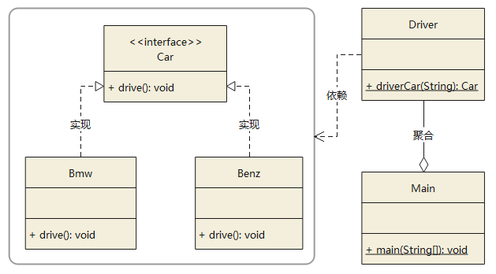

创建型模式
这些设计模式提供了一种在创建对象的同时隐藏创建逻辑的方式，而不是使用new运算符直接实例化对象。这使得程序在判断针对某个给定实例需要创建哪些对象时更加灵活。
- 单例模式（Singleton Pattern）
- 简单工厂模式（Simple Factory Pattern）
- 工厂模式（Factory Pattern）
- 抽象工厂模式（Abstract Factory Pattern）
- 建造者模式（Builder Pattern）
- 原型模式（Prototype Pattern）
单例模式（Singleton Pattern）
简单工厂模式（Simple Factory Pattern）

工厂模式（Factory Pattern）
抽象工厂模式（Abstract Factory Pattern）
建造者模式（Builder Pattern）